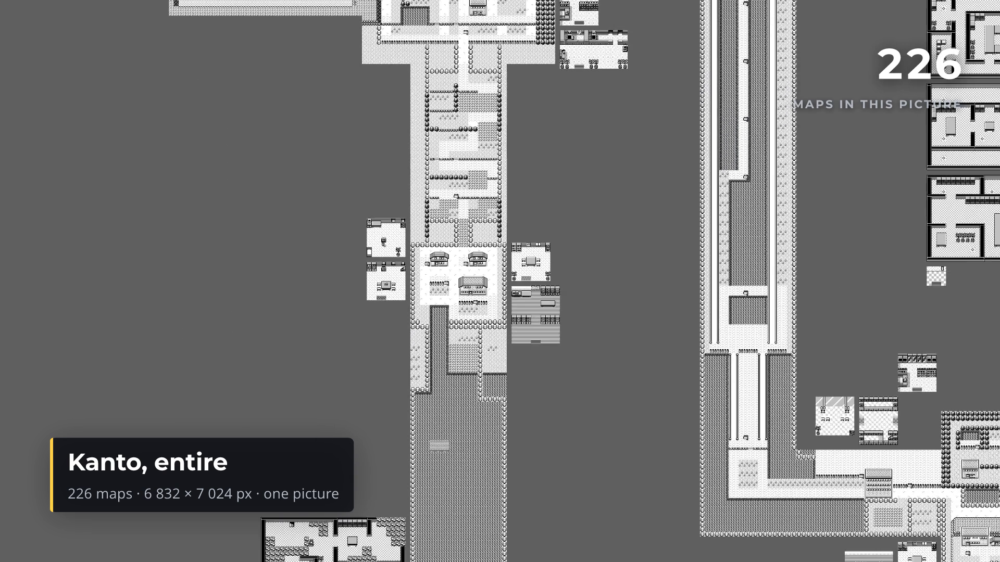
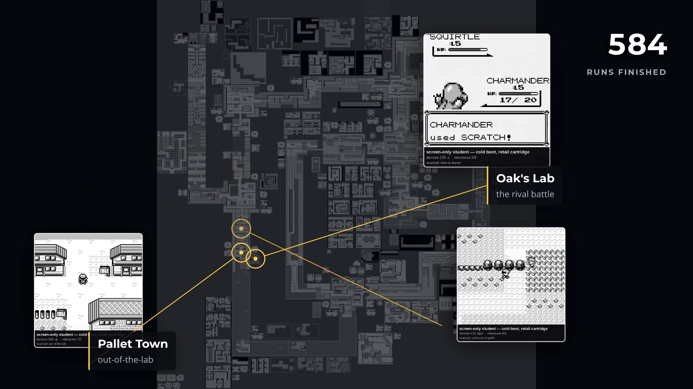

ShowReel · Tooling
The number that could have sunk it
Could Remotion — a React framework that renders video by rasterising a headless browser, frame by frame — open on Pokémon Blue's title screen, pull back to reveal the whole world map, and let battle moments from our swarm runs burst out of wherever they actually happened? Two of the three things that shot needed already existed. The third was a camera, and the one real unknown about building it ourselves came back a non-issue: 4.3 milliseconds a frame.
Two of the three already existed
PixelGB already renders every one of Pokémon Blue's 226 maps into one picture,
6,832 × 7,024, 48.0 megapixels, with the seams between towns and routes measured
rather than eyeballed. AgentGB already turns a swarm of parallel cold boots into real
Game Boy footage — the same runs this blog already writes about, not a re-enactment of
them. And the narrow phone cut this needed was already policy rather than a new
problem: Telegram's sendVideo refuses 60fps outright, at any file size, so
a 720p/30fps pass has been the standard delivery output for a while.
Two-thirds of the job was already sitting on disk, done, and nobody had noticed.
The piece that didn't exist
Nothing in the house could zoom or pan across a still that large, or choreograph several independently-timed clips appearing at chosen positions on cue. That's a camera and a scheduler, not a renderer — and it's exactly what a tool like Remotion is for.
Remotion's own documentation doesn't put a number on the one thing that actually mattered here: whether a smooth pull-back over an image that size performs at all. Not "renders eventually" — holds something close to real time, for a shot that needs nine continuous seconds of it. That was the one genuine unknown, and it was the kind of thing that could have ended the idea before it started.
Building our own instead of adopting theirs
The licence was never actually the obstacle. Remotion is free for one person working alone, personal or commercial use either way, so the open-source-versus-paid-seat question people expect never came up. What decided it was smaller than that: the piece Remotion would actually contribute — a camera and clip choreography over footage we already generate — is a well-understood technique, and building it cost about the same as learning somebody else's framework well enough to trust it. Minus the ~300MB Chromium download and a Node toolchain nothing else here uses.
So: ShowReel. A Rust crate — eighteen modules, a little over 8,600 lines — that takes a
description of a film and renders it, deterministically, to an mp4. tiny-skia
and rustybuzz draw the pixels and the glyphs; ffmpeg encodes.
No browser, no Node, no headless Chromium. From the point the Remotion question was
answered to a rendered film was under two hours.
The film itself is 393 lines written against nothing but that public API — a title screen, a camera move, five bursts of footage, a pull-up naming one of them. Nothing in the crate underneath it knows what a map or a Pokémon is; every map rectangle and clip timestamp lives in that one file, as input.
The number that mattered
The test that answered the risky question: a 120-frame pull-back over the actual 6,832 × 7,024 atlas, rendered down to 1920 × 1080.
| Approach | ms / frame | 120 frames |
|---|---|---|
| Crop and resample from full resolution, one thread | 142.1 | 17.05 s |
| Mip pyramid, one thread | 42.2 | 5.06 s |
| Mip pyramid, 20 threads | 4.3 | 0.52 s |
33× faster than the obvious version, and around 8× faster than real time for the actual shot.
The reason is choosing an already-shrunk copy of the image before resampling, instead of reading the full 48 megapixels on every single frame regardless of how much of it ends up on screen. Cost becomes proportional to the output size rather than the source size — close to constant, whatever the zoom. Building that pyramid once, at load, costs 523 milliseconds and holds 192MB resident afterward. When the camera pushes in rather than pulls back — a Game Boy screen blown up to fill the frame — the same code switches to nearest-neighbour resampling instead, so the pixel art stays sharp rather than turning to mush.

Where it actually happened
The whole opening chain — leaving the bedroom, the rival battle, out of the lab, north up Route 1 — happens within a few hundred pixels of Pallet Town. On a picture of the whole region, that is a few dozen screen pixels. Every burst in the finished film clusters there, because that is where the footage covers, not because the film is choosing to.
So each clip sits at the edge of the frame instead, and a line is drawn back to the map coordinate it actually happened at.
“The line is the claim, not the position.”
What the footage placements are allowed to say
What it doesn't do
There's no audio — every encode ShowReel produces drops the input track outright. Memory is spent on footage, not on the picture: the finished film holds over a gigabyte of decoded video clips in memory at once, about six times what the 48-megapixel atlas itself costs once it's been reduced to its pyramid.
There's no scrubbable preview player either, the thing Remotion's own docs lean on hardest. In its place: a single frame in about a tenth of a second, a whole labelled contact sheet of the film in three seconds, and a genuinely scaled-down preview pass in under seven — all well short of the 25 seconds a full render takes. That loop is what caught a caption running off the edge of the frame before a single second of video was ever encoded.
The performance figures on this page are ShowReel's own, measured on the machine that built the film. The stills are real frames pulled from that render.
← Back to devlog